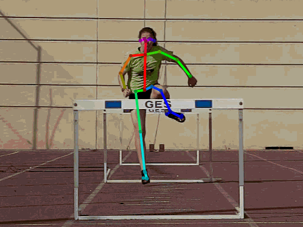

Importing external data¶
In addition to importing annotations created in MotionON you may import annotations created in other software.
Two external formats are supported: SRT subtitles and OpenPose body poses.
SRT SubRip Text subtitles¶
SRT is a simple subtitle file format containing a series of subtitles and the corresponding start and end timestamps.
To load an SRT subtitle on top of a video in MotionON, use the menu and point to the SRT file.
A label object will be created for each subtitle block with its visibility set up according to the timestamps for the subtitle.
OpenPose¶
OpenPose is a software that detects human body poses in images.
To learn more about OpenPose check the project page: https://github.com/CMU-Perceptual-Computing-Lab/openpose
The result of running the OpenPose program on a video is a set of JSON files containing data for one or more human postures. OpenPose uses a 25-point body model.
This is not meant to be used for measurements but for general posture assessment.
The workflow to import OpenPose data into MotionON is the following:
Run the OpenPose software on the video, using the write_json option. This creates a set of .json files in the output directory. Each file contains descriptors for the detected poses.
> bin\OpenPoseDemo.exe --video examples\media\video.avi --write_json output/
In MotionON, use the menu and point to the first JSON file of the series.
Each detected human pose will be converted to a human model drawing using a dedicated model.
